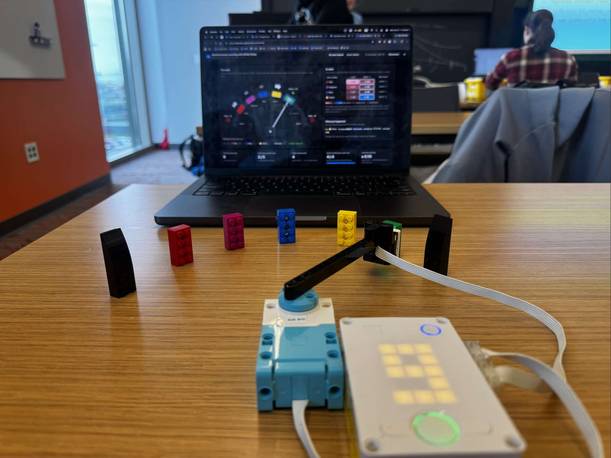

These two programs use a LEGO SPIKE Prime color sensor on a motorized arm to scan a row of colored bricks. The read_color.py program checks the sensor readings, while rl_color_search.py uses Q-learning to choose left or right sweeps while searching for a goal color.
I trained the robot with repeated Q-learning episodes. Before each episode, I positioned the sensor over a colored brick and chose training mode. The robot then chose whether to sweep left or right. Finding the green goal earned a positive reward of +10, reaching a black boundary earned a negative reward of -10, and each other move received a -1 penalty. After each move, Q-learning updated the value of that direction based on the reward and the next color it sensed. During training, the robot sometimes tried a random direction to explore; in test mode, it used the best direction it had learned so far.
read_color.py)from hub import port, button, light, light_matrix
import color
import color_sensor
import motor
import runloop
ARM_MOTOR_PORT = port.B
COLOR_SENSOR_PORT = port.D
SWEEP_SPEED = 30
MOTOR_DIRECTION = 1
CONFIRM_READINGS = 4
READING_GAP_MS = 25
IGNORE_COLORS = []
BOUNDARY_COLOR = color.BLACK
SHOW_DETAILS = True
COLOR_NAMES = {
color.BLACK: "BLACK", color.MAGENTA: "MAGENTA", color.PURPLE: "PURPLE",
color.BLUE: "BLUE", color.AZURE: "AZURE", color.TURQUOISE: "TURQUOISE",
color.GREEN: "GREEN", color.YELLOW: "YELLOW", color.ORANGE: "ORANGE",
color.RED: "RED", color.WHITE: "WHITE", color.UNKNOWN: "NONE",
}
LETTERS = {
color.BLACK: "K", color.MAGENTA: "M", color.PURPLE: "P", color.BLUE: "B",
color.AZURE: "A", color.TURQUOISE: "T", color.GREEN: "G", color.YELLOW: "Y",
color.ORANGE: "O", color.RED: "R", color.WHITE: "W", color.UNKNOWN: "-",
}
def color_name(c):
return COLOR_NAMES.get(c, str(c))
def is_brick(c):
return c != color.UNKNOWN and c not in IGNORE_COLORS
def report(c):
"""Print the new color and show it on the hub."""
if c == color.UNKNOWN:
line = " NONE (a gap - good, gaps should read as no color)"
elif c in IGNORE_COLORS:
line = " " + color_name(c) + " (ignored - in IGNORE_COLORS)"
else:
line = " " + "{:<10}".format(color_name(c))
if SHOW_DETAILS:
r, g, b, i = color_sensor.rgbi(COLOR_SENSOR_PORT)
line += (" light " + str(color_sensor.reflection(COLOR_SENSOR_PORT)) + "%"
+ " r/g/b " + str(r) + "/" + str(g) + "/" + str(b))
print(line)
light_matrix.write(LETTERS.get(c, "?"))
if c == color.UNKNOWN:
light.color(light.POWER, color.BLACK)
else:
light.color(light.POWER, c)
def check_sweep(bricks):
"""After a motor sweep from one end to the other, check the list of bricks."""
middle = bricks[1:-1]
print("Full sweep, end to end: " + " ".join(color_name(c) for c in bricks))
problems = 0
for c in middle:
times = middle.count(c)
if times >= 3:
print(" PROBLEM: " + color_name(c) + " shows up between many bricks. That is probably"
" the table showing through the gaps. Add it to IGNORE_COLORS (here AND in"
" rl_color_search.py), or move the sensor closer to the bricks.")
problems += 1
break
if times > 1 or c == BOUNDARY_COLOR:
print(" PROBLEM: " + color_name(c) + " appears more than once. Each brick needs its"
" own color (or the sensor misread a brick).")
problems += 1
break
if len(middle) == 0:
print(" PROBLEM: no bricks found between the two ends.")
problems += 1
if problems == 0:
print(" Looks good: " + str(len(middle)) + " different bricks between the two "
+ color_name(BOUNDARY_COLOR) + " ends. Sweep it again to make sure it's the same"
" every time!")
print()
async def main():
print()
print("=================================================")
print(" READ COLOR - check the color sensor and track")
print("=================================================")
print("Turn the arm by hand, or HOLD the LEFT / RIGHT button to sweep it.")
print("Each new color the sensor settles on is printed below.")
print("Check: holding LEFT should move the arm to the LEFT.")
print()
print(">> Turn the arm by hand, or hold LEFT or RIGHT to sweep it across the bricks.")
motor.stop(ARM_MOTOR_PORT, stop=motor.COAST)
steady = None
candidate = None
count = 0
moving = 0
last_sweep = 0
bricks = []
blocked = 0
while True:
if button.pressed(button.LEFT):
want = -1
elif button.pressed(button.RIGHT):
want = 1
else:
want = 0
if want == blocked:
want = 0
if want != moving:
if want == 0:
motor.stop(ARM_MOTOR_PORT, stop=motor.COAST)
else:
if want != last_sweep:
if want == -1:
print("--- sweeping LEFT ---")
else:
print("--- sweeping RIGHT ---")
bricks = []
if steady is not None and is_brick(steady):
bricks.append(steady)
last_sweep = want
motor.run(ARM_MOTOR_PORT, want * MOTOR_DIRECTION * SWEEP_SPEED)
moving = want
c = color_sensor.color(COLOR_SENSOR_PORT)
if c == candidate:
count += 1
else:
candidate = c
count = 1
if count == CONFIRM_READINGS and c != steady:
steady = c
report(c)
if is_brick(c) and c != BOUNDARY_COLOR:
blocked = 0
if is_brick(c) and (len(bricks) == 0 or bricks[-1] != c):
bricks.append(c)
print(" Bricks in order: " + " ".join(color_name(b) for b in bricks))
if moving != 0 and c == BOUNDARY_COLOR and len(bricks) > 1:
motor.stop(ARM_MOTOR_PORT, stop=motor.COAST)
blocked = moving
moving = 0
if bricks[0] == BOUNDARY_COLOR:
check_sweep(bricks)
print(">> Reached an end of the track. Hold the other button to sweep back.")
await runloop.sleep_ms(READING_GAP_MS)
runloop.run(main())rl_color_search.py)from hub import port, button, light, light_matrix, sound
import color
import color_sensor
import motor
import random
import runloop
import time
ARM_MOTOR_PORT = port.B
COLOR_SENSOR_PORT = port.D
GOAL_COLOR = color.GREEN
BOUNDARY_COLOR = color.BLACK
IGNORE_COLORS = []
REWARD_GOAL = 10
REWARD_BOUNDARY = -10
REWARD_STEP = -1
ALPHA = 0.5
GAMMA = 0.9
EPSILON = 0.1
MAX_STEPS = 15
SWEEP_SPEED = 30
MOTOR_DIRECTION = 1
CONFIRM_READINGS = 4
READING_GAP_MS = 25
SWEEP_TIMEOUT_MS = 10000
VOLUME = 60
PRINT_QTABLE_AFTER_RUN = True
DASHBOARD_LINES = True
ACTIONS = ["LEFT", "RIGHT"]
LEFT = 0
RIGHT = 1
COLOR_NAMES = {
color.BLACK: "BLACK", color.MAGENTA: "MAGENTA", color.PURPLE: "PURPLE",
color.BLUE: "BLUE", color.AZURE: "AZURE", color.TURQUOISE: "TURQUOISE",
color.GREEN: "GREEN", color.YELLOW: "YELLOW", color.ORANGE: "ORANGE",
color.RED: "RED", color.WHITE: "WHITE", color.UNKNOWN: "NONE",
}
def color_name(c):
return COLOR_NAMES.get(c, str(c))
def color_list(colors):
"""Color names joined by commas, or 'none' for an empty list."""
if len(colors) == 0:
return "none"
return ",".join(color_name(c) for c in colors)
def num(x):
"""A number as text with 2 decimals: -0.5 -> '-0.50'."""
return "{:.2f}".format(x)
def num_list(values):
"""Numbers with no spaces: [1, -0.5] -> '[1.00,-0.50]'."""
return "[" + ",".join(num(v) for v in values) + "]"
def signed(n):
"""An integer with a + sign if positive: 10 -> '+10'."""
if n > 0:
return "+" + str(n)
return str(n)
def data(line):
"""Print a short data line for the web dashboard."""
if DASHBOARD_LINES:
print("@" + line)
def tell(text):
"""Tell the student what to do next."""
print(">> " + text)
class QAgent:
def __init__(self, num_states, num_actions, alpha, gamma):
self.alpha = alpha
self.gamma = gamma
self.num_actions = num_actions
self.q = [[0.0] * num_actions for _ in range(num_states)]
def add_state(self):
"""Add a row for a newly discovered state."""
self.q.append([0.0] * self.num_actions)
def best_action(self, state):
"""Pick the action with the highest Q-value, breaking ties randomly."""
row = self.q[state]
best = max(row)
ties = [a for a in range(len(row)) if row[a] == best]
return random.choice(ties)
def choose_action(self, state, epsilon):
"""Choose a random action sometimes; otherwise use the best known one."""
if random.random() < epsilon:
return random.randint(0, len(self.q[state]) - 1), True
return self.best_action(state), False
def learn(self, state, action, reward, next_state, done):
"""Update the Q-value using the Q-learning rule."""
old = self.q[state][action]
if done:
best_next = 0.0
else:
best_next = max(self.q[next_state])
target = reward + self.gamma * best_next
new = old + self.alpha * (target - old)
self.q[state][action] = new
return old, best_next, new
class ColorTrack:
def __init__(self):
self.states = []
self.current = None
def check_setup(self):
"""Return a list of configuration problems."""
problems = []
if GOAL_COLOR == BOUNDARY_COLOR:
problems.append("GOAL_COLOR and BOUNDARY_COLOR must be different colors.")
if GOAL_COLOR in IGNORE_COLORS or BOUNDARY_COLOR in IGNORE_COLORS:
problems.append("IGNORE_COLORS can't include the goal or boundary color.")
if GOAL_COLOR == color.UNKNOWN or BOUNDARY_COLOR == color.UNKNOWN:
problems.append("The goal and boundary need real colors, not UNKNOWN.")
return problems
def is_brick(self, c):
return c != color.UNKNOWN and c not in IGNORE_COLORS
def is_end(self, c):
return c == GOAL_COLOR or c == BOUNDARY_COLOR
def state_number(self, c):
return self.states.index(c)
def read_color(self):
return color_sensor.color(COLOR_SENSOR_PORT)
async def read_steady_color(self):
"""Return the color if consecutive readings agree."""
first = self.read_color()
for _ in range(CONFIRM_READINGS - 1):
await runloop.sleep_ms(READING_GAP_MS)
if self.read_color() != first:
return color.UNKNOWN
return first
async def sweep(self, action):
"""Sweep to the next brick, or return stopped/lost if unsuccessful."""
if action == LEFT:
direction = -1
else:
direction = 1
start_color = self.current
candidate = None
count = 0
result = "lost"
start_time = time.ticks_ms()
motor.run(ARM_MOTOR_PORT, direction * MOTOR_DIRECTION * SWEEP_SPEED)
while time.ticks_diff(time.ticks_ms(), start_time) < SWEEP_TIMEOUT_MS:
if stop_requested():
result = "stopped"
break
seen = self.read_color()
if seen != start_color and self.is_brick(seen):
if seen == candidate:
count += 1
else:
candidate = seen
count = 1
if count >= CONFIRM_READINGS:
self.current = seen
result = "ok"
break
else:
candidate = None
count = 0
await runloop.sleep_ms(READING_GAP_MS)
motor.stop(ARM_MOTOR_PORT, stop=motor.BRAKE)
return result
def outcome(self, c):
"""Return the reward, episode status, and outcome name."""
if c == GOAL_COLOR:
return REWARD_GOAL, True, "goal"
if c == BOUNDARY_COLOR:
return REWARD_BOUNDARY, True, "boundary"
return REWARD_STEP, False, "step"
def discover(agent, env, c):
"""Add an unseen, non-terminal brick color to the Q-table."""
if c in env.states or env.is_end(c):
return
env.states.append(c)
agent.add_state()
print("New color discovered: " + color_name(c)
+ " -> new row in the Q-table")
data("DISCOVER state=" + color_name(c) + " row=" + str(len(env.states) - 1))
def stop_requested():
return button.pressed(button.LEFT) or button.pressed(button.RIGHT)
async def wait_for_release():
while stop_requested():
await runloop.sleep_ms(20)
async def wait_for_button(episodes):
"""Wait for LEFT (test) or RIGHT (train)."""
await wait_for_release()
light_matrix.write(str(episodes))
shown_at = time.ticks_ms()
while not stop_requested():
if episodes >= 10 and time.ticks_diff(time.ticks_ms(), shown_at) > 3000:
light_matrix.write(str(episodes))
shown_at = time.ticks_ms()
await runloop.sleep_ms(20)
if button.pressed(button.RIGHT):
which = button.RIGHT
else:
which = button.LEFT
await wait_for_release()
return which
async def beep(frequency, ms):
if VOLUME > 0:
await sound.beep(frequency, ms, VOLUME)
def show_color_light(c):
if c in COLOR_NAMES and c != color.UNKNOWN:
light.color(light.POWER, c)
async def show_result(result):
if result == "goal":
light_matrix.show_image(light_matrix.IMAGE_HAPPY)
await beep(660, 120)
await beep(880, 120)
await beep(1320, 250)
elif result == "boundary":
light_matrix.show_image(light_matrix.IMAGE_SAD)
await beep(220, 500)
elif result == "max_steps":
light_matrix.show_image(light_matrix.IMAGE_CONFUSED)
await beep(440, 300)
else:
light_matrix.show_image(light_matrix.IMAGE_NO)
await beep(330, 300)
await runloop.sleep_ms(1200)
def print_welcome():
print()
print("=================================================")
print(" 1D COLOR SEARCH with Reinforcement Learning")
print("=================================================")
print("Goal: " + color_name(GOAL_COLOR) + " Boundary (both ends): "
+ color_name(BOUNDARY_COLOR))
if IGNORE_COLORS:
print("Not bricks (ignored): " + " ".join(color_name(c) for c in IGNORE_COLORS))
print("The robot discovers the other brick colors as it explores.")
print("The Q-table starts empty: each new color adds a row.")
print("Rewards: goal " + signed(REWARD_GOAL) + ", boundary "
+ signed(REWARD_BOUNDARY) + ", any other move " + signed(REWARD_STEP))
print("Learning: alpha " + num(ALPHA) + ", gamma " + num(GAMMA)
+ ", epsilon " + num(EPSILON))
print()
print(" RIGHT button = TRAIN one episode")
print(" LEFT button = TEST what it learned")
print(" Press either button during a run to stop it.")
print()
def send_config():
"""Describe the search settings to the web dashboard."""
data("CONFIG app=search"
+ " goal=" + color_name(GOAL_COLOR)
+ " boundary=" + color_name(BOUNDARY_COLOR)
+ " ignore=" + color_list(IGNORE_COLORS)
+ " actions=" + ",".join(ACTIONS)
+ " alpha=" + num(ALPHA) + " gamma=" + num(GAMMA) + " epsilon=" + num(EPSILON)
+ " max_steps=" + str(MAX_STEPS)
+ " reward_goal=" + str(REWARD_GOAL)
+ " reward_boundary=" + str(REWARD_BOUNDARY)
+ " reward_step=" + str(REWARD_STEP))
def send_qtable(agent, env, episodes):
data("QTABLE app=search ep=" + str(episodes) + " states=" + color_list(env.states))
for i in range(len(env.states)):
data("QROW app=search state=" + color_name(env.states[i])
+ " q=" + num_list(agent.q[i]))
def print_qtable(agent, env, episodes):
if len(env.states) == 0:
print("The Q-table is still empty: no colors discovered yet.")
print()
return
print("Q-table after " + str(episodes) + " training episode(s). Higher = better.")
print(" {:<10}{:>8}{:>8} {}".format("color", "LEFT", "RIGHT", "best move"))
for i in range(len(env.states)):
left_q = agent.q[i][LEFT]
right_q = agent.q[i][RIGHT]
if left_q == right_q:
best = "(tie - no favorite yet)"
elif left_q > right_q:
best = "<- LEFT"
else:
best = "RIGHT ->"
print(" {:<10}{:>8}{:>8} {}".format(color_name(env.states[i]),
num(left_q), num(right_q), best))
print()
def start_problem(c):
"""Return a message if the starting sensor reading is not usable."""
if c == GOAL_COLOR:
return ("The sensor is already on the goal (" + color_name(c)
+ ")! Move to a different brick.")
if c == BOUNDARY_COLOR:
return "The sensor is on a boundary brick. Move to a middle brick."
if c == color.UNKNOWN:
return ("I can't get a steady color. Move the sensor over a brick. "
"read_color.py can help check your setup.")
if c in IGNORE_COLORS:
return ("The sensor reads " + color_name(c)
+ ", which is ignored. Move it over a brick.")
return None
async def run_episode(agent, env, training, episodes, run_number):
if training:
mode = "train"
epsilon = EPSILON
print("=== TRAINING episode " + str(episodes) + ": starting on "
+ color_name(env.current) + " ===")
else:
mode = "test"
epsilon = 0.0
print("=== TEST run (after " + str(episodes) + " training episodes): starting on "
+ color_name(env.current) + " ===")
data("START app=search mode=" + mode + " run=" + str(run_number)
+ " ep=" + str(episodes) + " start=" + color_name(env.current)
+ " epsilon=" + num(epsilon))
discover(agent, env, env.current)
show_color_light(env.current)
total = 0
steps = 0
result = "max_steps"
for t in range(1, MAX_STEPS + 1):
here = env.current
s = env.state_number(here)
action, explored = agent.choose_action(s, epsilon)
if explored:
how = "random - exploring!"
explore_word = "yes"
elif agent.q[s][LEFT] == agent.q[s][RIGHT]:
how = "a tie, so picked at random"
explore_word = "no"
else:
how = "best move so far"
explore_word = "no"
data("CHOOSE run=" + str(run_number) + " t=" + str(t)
+ " state=" + color_name(here) + " action=" + ACTIONS[action]
+ " explore=" + explore_word + " q=" + num_list(agent.q[s]))
if explored:
light_matrix.write("?")
await beep(1800, 80)
await runloop.sleep_ms(250)
if action == LEFT:
light_matrix.show_image(light_matrix.IMAGE_ARROW_W)
else:
light_matrix.show_image(light_matrix.IMAGE_ARROW_E)
status = await env.sweep(action)
if status != "ok":
result = status
break
show_color_light(env.current)
reward, done, kind = env.outcome(env.current)
if not done:
discover(agent, env, env.current)
steps = t
total += reward
story = (" step " + str(t) + ": on " + color_name(here) + ", chose "
+ ACTIONS[action] + " (" + how + ") -> " + color_name(env.current)
+ ", reward " + signed(reward))
line = ("STEP run=" + str(run_number) + " t=" + str(t)
+ " state=" + color_name(here) + " action=" + ACTIONS[action]
+ " explore=" + explore_word + " next=" + color_name(env.current)
+ " reward=" + str(reward))
if training:
if done:
next_s = None
else:
next_s = env.state_number(env.current)
old, best_next, new = agent.learn(s, action, reward, next_s, done)
story += (" Q(" + color_name(here) + "," + ACTIONS[action] + "): "
+ num(old) + " -> " + num(new))
line += " old=" + num(old) + " best_next=" + num(best_next) + " new=" + num(new)
print(story)
data(line)
if done:
result = kind
break
motor.stop(ARM_MOTOR_PORT, stop=motor.COAST)
if result == "goal":
print("Found the GOAL in " + str(steps) + " step(s)! Total reward: " + signed(total))
elif result == "boundary":
print("Hit the boundary after " + str(steps) + " step(s). Total reward: "
+ signed(total))
elif result == "max_steps":
print("Used all " + str(MAX_STEPS) + " steps without reaching an end. Total reward: "
+ signed(total))
elif result == "stopped":
print("Run stopped by a button press.")
else:
print("Lost: no new brick found within " + str(SWEEP_TIMEOUT_MS // 1000)
+ " seconds. Check sensor alignment or slow down SWEEP_SPEED.")
data("END app=search mode=" + mode + " run=" + str(run_number) + " ep=" + str(episodes)
+ " steps=" + str(steps) + " total=" + str(total) + " result=" + result)
await show_result(result)
async def main():
env = ColorTrack()
print_welcome()
problems = env.check_setup()
if problems:
for p in problems:
print("SETUP PROBLEM: " + p)
tell("Fix the settings at the top of the program and download it again.")
light_matrix.show_image(light_matrix.IMAGE_NO)
await beep(200, 600)
return
agent = QAgent(0, len(ACTIONS), ALPHA, GAMMA)
episodes = 0
runs = 0
data("HELLO app=search version=2")
send_config()
send_qtable(agent, env, episodes)
motor.stop(ARM_MOTOR_PORT, stop=motor.COAST)
message = ("Turn the arm by hand so the sensor is over a colored brick. "
"Then press RIGHT to TRAIN or LEFT to TEST.")
while True:
tell(message)
which = await wait_for_button(episodes)
training = (which == button.RIGHT)
start = await env.read_steady_color()
problem = start_problem(start)
if problem:
print("Can't start yet.")
message = problem
light_matrix.show_image(light_matrix.IMAGE_NO)
await beep(300, 300)
await runloop.sleep_ms(700)
continue
env.current = start
send_config()
send_qtable(agent, env, episodes)
runs += 1
if training:
episodes += 1
await run_episode(agent, env, training, episodes, runs)
send_qtable(agent, env, episodes)
if PRINT_QTABLE_AFTER_RUN:
print_qtable(agent, env, episodes)
message = ("Move the arm to a new starting brick. "
"Then press RIGHT to TRAIN or LEFT to TEST.")
runloop.run(main())